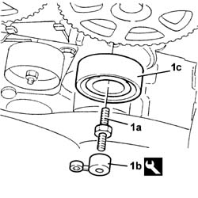
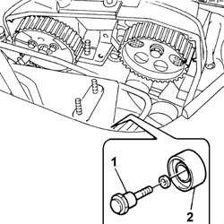
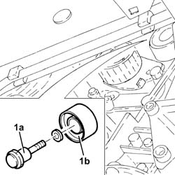
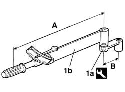
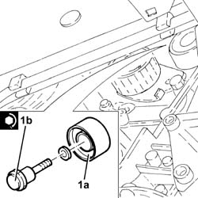

1032C30 fixed timing system tensioner - r + r with timing belt removed
- Path
- Procedures > 10 ENGINE > 1032 TIMING SYSTEM > 1032C timing system tensioners > 1032C30 fixed timing system tensioner - r + r with timing belt removed
- Kind
- repair procedure (removal / refitting; the operation number is the code)
- Applies to
- all engines; all production periods
- Interactive page
- https://sloeber94.github.io/elrnDB-fDbl/en/#/2584344
Applies to: all engines; all production periods
 Removing
Removing
 Refitting
Refitting1. Undo the bolt (1a) using the the tool (1b), then remove the timing fixed tensioner (1c).
 | Name | Country |
|---|---|---|
1b | Key | 1.860.973.000 |

Applies to: all engines; all production periods
Removing
Refitting1. Withdraw the retaining bolt.
2. Remove the fixed timing belt tensioner.

Applies to: all engines; all production periods
Removing
Refitting1. Undo the bolt (1a) and remove the fixed timing belt tensioner (1b).

Applies to: all engines; all production periods
Refitting
RemovingFit the fixed timing belt tensioner and secure by tightening the bolt to the recommended torque using the special tool.
| Name | Country |
|---|---|---|
- | Key | 1.860.973.000 |
 | Fastening | Component | Ø | Value (daNm) |
|---|---|---|---|---|
- | Bolt | FIXED TENSIONER | M12 | 8 |
1. Use the tool (1a) on the torque wrench (1b), adjust the nominal tightening torue for the fixed tensioner as described below.
| Name | Country |
|---|---|---|
1a | Key | 1.860.973.000 |
To obtain the exact tightening torque, multiply the length of torque wrench (A) by nominal tightening torque (C). Then divide the result by the sum of the length of torque wrench (A) and the length of tool (B).
Example of calculating the actual calibration using a 0.4 mm long torque wrench for tightening a fixing element with a torque of

Applies to: all engines; all production periods
Refitting
RemovingFit the fixed timing belt tensioner.
Tighten the retaining bolt to torque.
| Fastening | Component | Ø | Value (daNm) |
|---|---|---|---|---|
- | Bolt | FIXED TENSIONER | M10 x 1.25 | 5 |
Applies to: all engines; all production periods
Refitting
Removing1. Place the timing fixed tensioner (1a) back in its housing and secure it by tightening the bolt (1b) to the recommended torque.
| Fastening | Component | Ø | Value (daNm) |
|---|---|---|---|---|
1b | Bolt | FIXED TENSIONER | M10 | 4.5 ÷ 5.5 |
